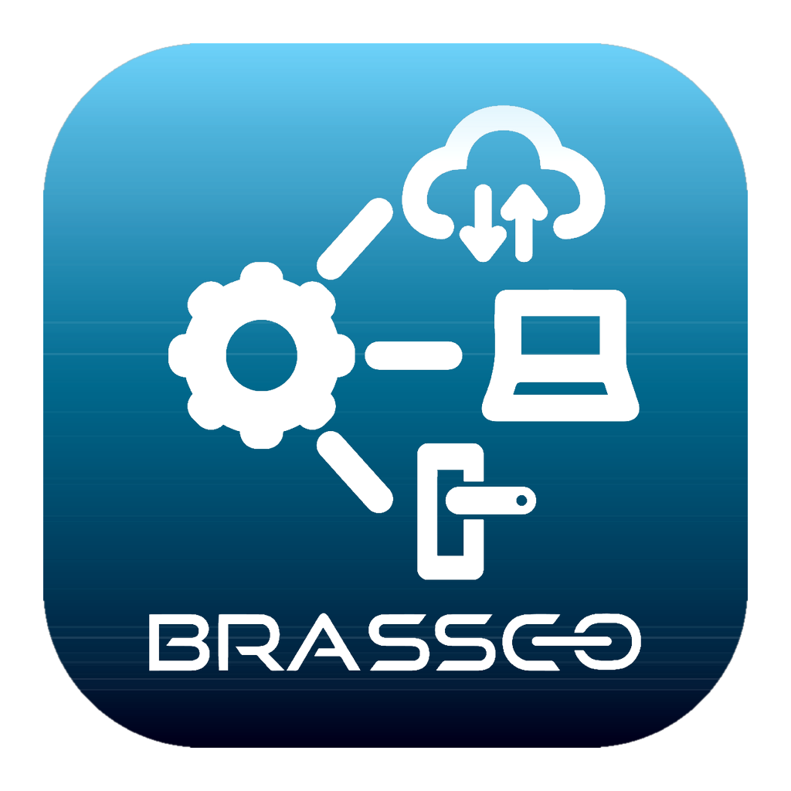

Brassco Artes
ARTES Cloud Desktop
Otel masaüstü uygulamasının güncel kurulum dosyasını indirin. Kurulu sürümler güncellemeleri otomatik alır.
Sürüm bilgisi yükleniyor…
Tüm platformlar
Kurulum notları
- Windows: SmartScreen uyarısı çıkabilir — “Daha fazla bilgi” → “Yine de çalıştır”.
- macOS: Gatekeeper engelleyebilir — Finder’da uygulamaya sağ tık → Aç (ilk açılışta).
-
Linux: AppImage’i çalıştırılabilir yapın
(
chmod +x) veya.debile kurun. - GitHub’daki Source code arşivleri boştur; yalnızca aşağıdaki kurulum dosyalarını kullanın.